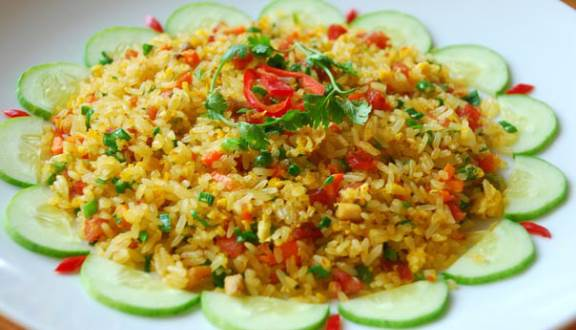

Chi Tiết Sản Phẩm
Cơm Rang
Cơm chiên thập cẩm Cơm chiên trứng Cơm chiên lạp xưởng Cơm chiên hay cơm rang là một món ăn phổ biến trong ẩm thực Á Đông. Với món ăn này, cơm cùng với dầu ăn hoặc mỡ được chiên với những thức ăn khác như thịt, trứng... Trong các tiệc lớn kiểu Trung Quốc, cơm chiên thường là món gần cuối (ăn ngay trước món tráng miệng). Có nhiều loại cơm chiên, mỗi loại có thành phần khác nhau. Ở Á Đông, những loại nổi tiếng là cơm chiên Dương Châu và cơm chiên Phúc Kiến. Ở phương Tây, những tiệm ăn Tàu bán cho người Mỹ đã chế biến ra nhiều loại cơm chiên khác, như là cơm chiên trứng, cơm chiên cay Singapore (thường không ăn tại Singapore) và "cơm chiên đặc biệt".